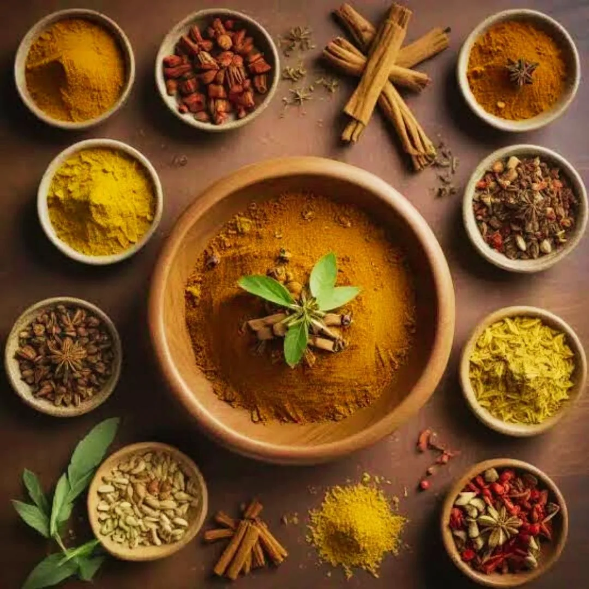

Moroccan Cuisine: The Complete Guide to Traditional Food & Culinary Heritage
A complete guide to Moroccan cuisine: its history, regional traditions, iconic dishes like tagine and couscous, spices and the hospitality behind every meal.
Editorial review by Bruno Potier
Moroccan cuisine is one of North Africa's oldest and most diverse food cultures — celebrated for fragrant spices, slow-cooked tagines, communal dishes and remarkable hospitality. It reflects thousands of years of history shaped by Amazigh (Berber), Arab, Andalusian, Jewish, African and Mediterranean influences.
The short version: if you taste only a few things, start with a chicken tagine with preserved lemon and olives, a Friday couscous, a slice of pastilla and a bowl of harira — then close the meal, as Moroccans always do, with mint tea. This guide explains where those dishes come from, how they are made, and the customs that surround every Moroccan table.
More Than Food: A Living Heritage
In Morocco, a meal is rarely only about eating. Every dish carries a story of family, generosity and transmission. Recipes are seldom learned from books. They pass down through generations, prepared side by side in family kitchens where gestures, aromas and shared moments become part of an intangible heritage.
A fragrant lamb tagine in Marrakech, a royal couscous on a Friday, grilled seafood along the Atlantic coast, mint tea beneath the Atlas Mountains — every region offers its own reading of Morocco's culinary identity. What follows is a guide to that heritage: its origins, its regional diversity, its most iconic dishes, its techniques, spices, breads, desserts and enduring customs.
Why Moroccan Cuisine Is So Unique
Few countries possess a culinary heritage as rich, diverse and well preserved as Morocco. Stretching from the Mediterranean to the Sahara, and from the Atlantic coast to the Atlas Mountains, the country enjoys an exceptional variety of landscapes, climates and agricultural traditions. That diversity supplies fresh vegetables, aromatic herbs, olives, citrus, dates, almonds, saffron, seafood, grains and quality meats that have shaped its regional cuisines for centuries.
Unlike many modern food cultures reshaped by industrialisation, Moroccan cooking has stayed rooted in family tradition. Many recipes are still prepared using techniques that have changed little in hundreds of years, and slow cooking remains central — meals built around patience rather than speed, letting ingredients develop depth through gentle simmering, steaming and careful seasoning.
What truly distinguishes the cuisine is its balance. Contrary to a common misconception, Moroccan food is not particularly hot. It is highly aromatic: measured combinations of cumin, cinnamon, ginger, turmeric, paprika, saffron and Ras el Hanout create complexity without overwhelming each ingredient. Hospitality does the rest — guests are welcomed with mint tea, fresh bread and an abundance of dishes meant to honour their presence. Sharing food is not simply a social custom; it is an expression of generosity, respect and community.
A Culinary Heritage Shaped by Civilisations
Moroccan cuisine did not emerge from a single culture. It developed over thousands of years as successive civilisations each contributed ingredients, techniques and traditions while a strong local identity endured. To understand Moroccan food is to understand Morocco itself.
Amazigh Foundations
Long before the Arab dynasties, the indigenous Amazigh (Berber) peoples had already laid the foundations of Moroccan cooking. Across the Atlas, the Rif, the Sahara and the rural plains, they built a cuisine adapted to their environment — barley, wheat, olive oil, goat, lamb, seasonal vegetables, wild herbs, almonds, dates and honey.
Many of Morocco's most emblematic methods are Amazigh in origin: clay tagines, stone mills, communal bread ovens and slow cooking, all preserved for centuries. Even a dish as evolved as couscous keeps unmistakable Amazigh roots.
Arab Influence
From the 7th century, Arab expansion transformed Moroccan society, language and cuisine. New ingredients and refined traditions arrived from the Middle East, enriching Amazigh practices rather than replacing them. Cinnamon, ginger, saffron and cloves grew more prominent, and dried fruits — dates, raisins, apricots — entered savoury dishes, creating the sweet-and-savoury combinations that became one of Morocco's defining signatures. Arab tradition also deepened the culture of hospitality, communal meals and generous feasting.
Andalusian Legacy
After the fall of Al-Andalus, from the late 15th century, Muslim and Jewish families expelled from Spain settled across northern Morocco, bringing refined culinary knowledge developed over centuries in Andalusian courts. Their influence is still tasted in pastilla, elaborate pastries, delicate almond desserts and sophisticated spice combinations. Fez, Tetouan, Chefchaouen and Rabat became centres where these traditions flourished and merged with local custom.
Jewish Contributions
For more than two thousand years, Jewish communities formed an integral part of Morocco's cultural and culinary landscape. Their influence remains visible through preserved recipes, festive dishes and distinctive flavour combinations — preparations using preserved lemons, olives, sweet spices, dried fruits and slow braising. Many dishes once made for Jewish celebrations gradually joined Morocco's wider repertoire, a reminder that the cuisine evolved through coexistence rather than isolation.
Sub-Saharan and Mediterranean Exchanges
Morocco's trans-Saharan trade routes connected the kingdom with West Africa for centuries, introducing millet, sorghum and certain spice traditions while shaping music, crafts and southern cooking — exchanges echoed in the Gnaoua musical heritage of the south. Along the coasts, Spanish and Portuguese influences shaped northern seafood and preservation techniques, while twentieth-century French influence introduced modern bakery traditions and café culture. None of these replaced older ways; each enriched an already diverse identity.
A Living Tradition, Kept by Families and the Dadas
Unlike historic cuisines that survive mainly through professional restaurants, Moroccan cooking still thrives in the family home. Recipes pass from parents to children through observation, repetition and shared meals. Measurements are often intuitive — a handful of herbs, a pinch of saffron, enough olive oil "until it feels right."
The country's greatest cooks are frequently not celebrity chefs but mothers, grandmothers and the remarkable women known as the Dadas — guardians of Morocco's regional culinary knowledge, whose expertise has preserved countless recipes across generations. This living transmission is why authentic Moroccan cuisine stays so connected to memory, family and place, and why every household develops subtle variations of the same classic dishes.
Moroccan Hospitality and Dining Etiquette
If one value defines Moroccan cuisine more than any ingredient, it is hospitality. Sharing food is an expression of generosity, friendship and respect, captured in a traditional saying: "The guest is a gift from God." Whether in a rural Amazigh village or a family home in Casablanca, guests are often greeted with mint tea, bread, pastries, olives or fruit before the main meal even begins. Generosity is measured by abundance, and ensuring everyone leaves satisfied is a point of honour.
Many traditional meals are served communally from a single large dish at the centre of the table. Rather than individual plates, family and guests gather around it, each eating from the section directly in front of them. Food is traditionally taken with the right hand, using small pieces of fresh bread to scoop sauces, vegetables and meat. Cutlery is now common, especially in restaurants, but eating from the same dish still symbolises equality, trust and togetherness — and special pieces of meat are often offered to honoured guests as a gesture of welcome.
Meals unfold gradually and are rarely rushed. Conversation, laughter and storytelling accompany the food, and mint tea may continue long after the plates are cleared. For many Moroccans, the table is where relationships are nurtured and memories are made.
The Daily Rhythm of Moroccan Meals
Habits vary by region and family, but many households follow a familiar rhythm. Breakfast is simple yet nourishing — freshly baked breads, msemen or baghrir with butter, honey, olive oil, cheese or homemade jam, and mint tea or coffee. Lunch is traditionally the most important meal, with tagines, grilled meats or vegetable dishes, and Friday lunch famously centred on couscous. Dinner is often lighter — soups, salads, tagines or leftovers shared in the evening. During Ramadan the rhythm changes entirely, with special meals marking the breaking of the fast and gatherings extending late into the night.
Essential Ingredients of Moroccan Cuisine
The richness of Moroccan cooking begins not with complexity but with exceptional ingredients, transformed through patience and balance rather than elaborate technique.
Olive Oil
If one ingredient defines the cuisine, it is olive oil. Morocco is a leading olive producer, with groves stretching from the Atlas foothills to the plains around Meknes, Fez and Marrakech. Extra-virgin oil is used to sauté onions and garlic, prepare tagines, dress salads, marinate meats and fish, finish vegetables and accompany warm bread. Its flavour ranges from delicate and fruity to robust and peppery, and a small dish of oil served with bread before a meal reflects both the country's agricultural wealth and its culture of welcome.
Bread
Bread is far more than an accompaniment. Fresh khobz — round, crusty, slightly dense — is baked every morning at home or at the communal neighbourhood oven, and serves as both food and utensil. Many families still consider a meal incomplete without it, and wasting bread is traditionally discouraged. Alongside khobz, Morocco offers msemen (flaky layered flatbread), baghrir (the "thousand-hole" semolina pancake), harcha (buttery semolina bread) and batbout (soft pan-cooked pockets).
Vegetables, Legumes and Herbs
Moroccan cuisine treats vegetables with real creativity — tomatoes, onions, carrots, courgettes, aubergines, peppers, potatoes, pumpkin, artichokes, broad beans, spinach and turnips often become the heart of the meal rather than a side. Legumes have nourished families for centuries: chickpeas, lentils, split peas, white beans and fava beans anchor dishes such as harira and bissara. Fresh herbs are used generously — flat-leaf parsley, coriander, mint, thyme and wild mountain herbs are fundamental to the flavour, not decorative.
Citrus, Dried Fruits and Nuts
Morocco's climate produces exceptional oranges, lemons and mandarins. Fresh lemon brightens marinades and salads, orange-blossom water perfumes pastries, and dried fruits and nuts — dates, raisins, apricots, figs, prunes, almonds and walnuts — create the subtle sweet-and-savoury contrast seen in lamb with prunes or almond-filled pastries.
Traditional Moroccan Cooking Techniques
The soul of the cuisine lies as much in method as in ingredients — techniques that prioritise patience over speed and craftsmanship over convenience, many unchanged for generations.
Slow Cooking
Patience is the defining principle. Tagines simmer gently for hours until meat is meltingly tender and vegetables absorb aromatic spices; soups gain richness through long cooking; festive dishes often begin the day before. Slow cooking lets meat become exceptionally tender, spices blend, natural sugars in onions caramelise and sauces develop complexity without cream or butter.
Cooking in a Tagine
The tagine — a wide clay base with a cone-shaped lid — is both cookware and culinary symbol. As food cooks, steam rises to the cone, condenses and returns to the dish, keeping ingredients moist while concentrating flavour with very little added water. Unglazed clay spreads heat gradually and evenly; many cooks believe it lends a subtle earthy character. Cooked over charcoal, wood embers or a gas burner with a diffuser, a traditional tagine may need two to four hours to reach perfection.
Steaming Couscous Four Times
Authentic couscous is not boiled but steamed four separate times in a couscoussier. Between each steaming, the grains are spread on a large dish, fluffed by hand, lightly moistened with salted water and separated. The lower pot holds the broth, vegetables and meat; steam rising through the perforated basket cooks the grains while infusing them with aroma. Just before serving, the couscous is enriched with smen or butter. This patient process produces the light, distinct texture that instant versions cannot match.
The Ferrane, Charcoal and Clay
For centuries, neighbourhoods have shared communal wood-fired ovens known as the ferrane. Families shape their dough at home, mark each loaf, and carry it to the baker — a practice that doubles as a place of daily social exchange. Charcoal, meanwhile, remains prized for tagines, mechoui, brochettes and seafood, adding gentle radiant heat and subtle smoke. Beyond the tagine, cooks rely on a range of handcrafted earthenware that retains heat evenly, tying the cuisine to the artisans who make its tools.
Cooking With the Seasons and Balancing Flavours
Traditional cooking follows nature's calendar — peas and broad beans in spring, tomatoes and courgettes in summer, pumpkin and quince in autumn, root vegetables and citrus in winter. Above all, Moroccan cooking seeks harmony between contrasting elements: savoury meat, sweet dried fruit, fragrant spice, bright citrus, fresh herbs, salty olives and crunchy almonds, each with a purpose so that no single element dominates. It is this balance — patience, seasonality, generosity and sharing — that gives the cuisine its reputation and its soul.
The Soul of Moroccan Flavour: Spices and Foundations
Spices are only one part of a larger philosophy. The identity of the cuisine comes from the interplay of spices, fresh herbs, preserved ingredients, aromatic waters, fermented products and slow cooking. No single ingredient dominates; each adds a subtle layer.
Ras el Hanout
Morocco's most legendary blend. The name means "head of the shop" — the finest spices a merchant offers. There is no official recipe: every merchant and often every family makes its own, from a dozen spices to more than thirty. Typical components include cumin, coriander, cinnamon, ginger, turmeric, black and white pepper, nutmeg, mace, cardamom, cloves, allspice, fennel, rose petals and lavender. For many families the exact composition is personal, passed quietly from one generation to the next.
Saffron — Morocco's Red Gold
Much of the country's finest saffron comes from around Taliouine, in the Anti-Atlas, where harvesting is almost entirely manual. Only tiny quantities are needed to perfume a dish with its floral aroma and golden colour, appearing in royal tagines, chicken dishes, seafood, festive couscous and celebratory meals. Its rarity and labour make it one of Morocco's most treasured products.
Preserved Lemons
Few ingredients are as uniquely Moroccan. Fresh lemons are packed in salt and left to mature for weeks or months until the peel softens and the bitterness fades, developing a flavour at once salty, tangy, floral and aromatic. Prized mainly for their peel, they bring brightness to chicken tagine with olives, fish tagines, chermoula and many salads — for many cooks as indispensable as olive oil.
Smen — Aged Fermented Butter
Made by salting and ageing butter for months, sometimes years, smen develops a deep, earthy, slightly pungent aroma unlike any other dairy. Used sparingly, it gives extraordinary depth to couscous, tanjia, rfissa and certain tagines. Traditional Marrakchi cooks generally consider it indispensable — without smen, many would argue, a tanjia is not truly a tanjia.
Chermoula, Aromatic Waters and Olives
Chermoula is Morocco's signature marinade — fresh coriander, parsley, garlic, cumin, paprika, olive oil and lemon, often with ginger, turmeric or preserved lemon — used for fish, seafood, chicken, vegetables and potatoes. Orange-blossom water and, less often, rose water perfume pastries, milk desserts and festive drinks. And olives, in green, purple and black, appear every day: at breakfast, with salads, in appetisers and in many iconic tagines. The pairing of olives and preserved lemons has become one of the cuisine's defining flavours.
Morocco's Most Iconic Dishes
With the foundations in place, these are the dishes that made Moroccan cuisine known around the world.
The Tagine
The word refers to both the clay vessel and the slow-cooked meal inside it. Unlike many stews, a tagine is not heavily sauced: ingredients cook in their own juices, enriched by olive oil, onions, herbs and spices until tender. Every region, family and season brings variations, yet certain tagines have become icons — see our dedicated guide to what a tagine is and how it is cooked.
- Chicken with preserved lemon and olives (Djaj Mqualli). Morocco's most internationally recognised tagine: chicken slow-cooked with onions, garlic, saffron, ginger and turmeric, brightened by preserved lemon and balanced by olives.
- Lamb with prunes. Festive and celebratory — lamb braised with cinnamon, ginger and saffron, topped with honey-cooked prunes, toasted almonds and sesame.
- Beef with vegetables. The everyday family tagine, showcasing seasonal produce with cumin, turmeric and ginger.
- Kefta with tomato and egg (KMB). Spiced meatballs simmered in tomato sauce, finished with eggs poached directly in the dish and eaten with bread.
- Fish tagine. Firm white fish marinated in chermoula over potatoes, tomatoes and peppers — popular in Essaouira, Safi, Agadir and Tangier.
For Moroccans, a tagine is more than a meal: it is the Friday gathering, the celebration shared across generations, the recipe transmitted from parents to children — flavours and memories in one pot.
Tanjia Marrakchia
While tagines are enjoyed everywhere, tanjia belongs almost entirely to Marrakech. It is prepared in a tall, urn-shaped clay pot with a narrow neck, sealed and traditionally entrusted to the farnatchi, the keeper of the neighbourhood hammam, who buries it in the glowing embers that heat the baths. Filled with beef or lamb, garlic, preserved lemon, cumin, saffron and smen, it cooks slowly for six to eight hours until the meat can be broken apart with a spoon.
Its history is urban: craftsmen of the medina — blacksmiths, carpenters, leatherworkers — prepared it in the morning and collected it at the end of the working day. Served straight from its vessel with warm bread, tanjia remains inseparable from the identity of Marrakech, much as pizza belongs to Naples or paella to Valencia.
Couscous — The National Dish
If the tagine is Morocco's most recognised dish, couscous is its national one — prepared every Friday, served at celebrations and holidays, and a symbol of togetherness. In 2020, the knowledge and traditions surrounding couscous were inscribed on the UNESCO Representative List of the Intangible Cultural Heritage of Humanity, jointly by Morocco, Algeria, Tunisia and Mauritania.
Beyond the classic seven-vegetable version, tfaya couscous adds caramelised onions, raisins and cinnamon; regional versions range from Fez's refined almond-and-raisin preparations to hearty barley couscous in the Atlas and seafood couscous along the coast. The internationally known "Couscous Royal," combining several meats, is largely a creation of Moroccan restaurants in France — at home, one principal meat is the norm.
Seffa
A festive dish that blurs the line between savoury and sweet. Fine vermicelli or couscous is steamed until delicate, then shaped into a dome dusted with powdered sugar and cinnamon and crowned with toasted almonds. The most celebrated version, Seffa Medfouna ("hidden"), conceals slowly cooked chicken or pigeon beneath the sweet grains — a striking illustration of Morocco's sweet-and-savoury harmony, reserved for weddings, births and religious feasts.
Pastilla
One of Morocco's most refined achievements, born in the imperial kitchens of Fez. Layers of paper-thin warqa pastry enclose a fragrant filling, toasted almonds and a dusting of sugar and cinnamon — crisp, tender, warm and subtly sweet at once. Chicken pastilla is now most common, while pigeon remains the prestigious original; seafood and milk (dessert) versions also exist. Reserved for celebrations, pastilla is considered one of the highest demonstrations of Moroccan culinary skill.
Harira
Rich, nourishing and aromatic, harira is Morocco's beloved soup — built on tomatoes, chickpeas, lentils, celery and fresh herbs, thickened with tedouira (a flour-and-water mixture) and cherished especially during Ramadan, when its aroma drifts from kitchens in the late afternoon. Traditionally served with dates, chebakia and fresh bread, it is enjoyed year-round as everyday comfort food.
Rfissa, Mechoui, Bissara
- Rfissa layers shredded trid or msemen soaked in a fragrant fenugreek-scented broth, topped with slow-cooked chicken and lentils — a restorative dish traditionally prepared for new mothers and family celebrations.
- Mechoui is whole lamb slow-roasted for hours until it falls from the bone, seasoned simply with salt and cumin and served with more cumin and salt on the side. Marrakech is especially known for it.
- Bissara, at the opposite end of the spectrum, is a humble purée of dried fava beans or split peas with garlic, olive oil and cumin — a beloved winter breakfast sold from street stalls in Fez, Meknes, Tangier and Chefchaouen.
Kemia and Chiiwats — The Art of Sharing
A Moroccan meal often opens with kemia, a generous assortment of small dishes (chiiwats) placed at the centre of the table. The word kemia comes from the Arabic for "quantity" or "assortment"; chhiwa means "something delicious." Highlights include zaalouk (roasted aubergine with tomato), taktouka (smoky grilled peppers and tomato), batata m'chermla (potatoes in chermoula), gar'a m'asla (sweet confit pumpkin), carrot and beetroot salads, olives and crisp briouats. There is no set order — everyone samples a little of everything with fresh bread, setting a tone of conviviality before the main course arrives.
Regional Cuisines at a Glance
| Region | Known for | Signature dishes |
|---|---|---|
| Marrakech | Spices, medina traditions | Tanjia, lamb tagine, mechoui |
| Fez | Refinement, Andalusian influence | Pastilla, tfaya couscous, almond pastries |
| Essaouira & the coast | Atlantic seafood | Fish tagine, grilled sardines, seafood couscous |
| Atlas Mountains | Amazigh, hearty | Barley couscous, lamb with walnuts, mountain herbs |
| The South & Sahara | Trans-Saharan trade | Date tagines, desert couscous, dried fruits |
| Tangier & the North | Mediterranean crossroads | Seafood tagines, lighter dishes, Andalusian sweets |
Travelling across Morocco is like travelling through several culinary worlds, yet certain values hold everywhere: hospitality first, respect for seasonal ingredients, slow cooking, fresh bread at every meal and the pleasure of sharing.
Moroccan Breakfast
For many visitors, breakfast is a delightful surprise — not a quick meal but a spread of freshly baked breads, handmade pancakes, honey, olive oil, butter, cheeses and jams, with mint tea. Msemen (flaky layered flatbread), baghrir (the thousand-hole pancake) and harcha (semolina bread) sit beside amlou, the Souss region's rich spread of roasted almonds, argan oil and honey. In some regions, particularly around Fez and Meknes, breakfast may include khlii, spiced preserved beef served with eggs. As with every Moroccan meal, the table is communal — breads in the middle, bowls shared, and a slow start to the day.
Bread and Pastry Traditions
Bread is treated with genuine respect in Morocco: rarely wasted, and if a piece falls it is often picked up and set aside rather than left underfoot. Alongside everyday khobz and the many regional flatbreads baked at the ferrane, Morocco has one of the Arab world's richest pastry traditions — refined rather than overly sweet, favouring almonds, sesame, honey, orange-blossom water and gentle spice.
- Kaab el Ghzal ("gazelle horns") — delicate crescents of almond paste scented with orange-blossom water.
- Ghriba — crumbly biscuits with a cracked surface, flavoured with almond, sesame, coconut or walnut.
- Fekkas — twice-baked biscuits with almonds and aniseed, ideal with mint tea.
- Chebakia — honey-and-sesame flower-shaped pastries, inseparable from Ramadan.
- Sellou (sfouf) — an energy-rich blend of roasted flour, almonds, sesame and spices, prepared during Ramadan and after childbirth.
Like the recipes themselves, these traditions are rarely written down. Children learn by watching mothers and grandmothers knead, shape and fold — safeguarding not only recipes but memories and celebrations.
Moroccan Desserts
Unlike cuisines that end every meal with an elaborate dessert, Morocco takes a restrained approach: many meals close simply with seasonal fruit, mint tea and perhaps a few homemade sweets. After the aromatic spices of a tagine, dessert often brings freshness rather than excess.
The most common dessert is fresh fruit — oranges, figs, pomegranates, grapes, melon and dates presented whole. Oranges with cinnamon, lightly scented with orange-blossom water, are an iconic winter dish. Elegant milk-based desserts include jawhara ("the jewel" of Fez), layered warqa with sweetened cream, and mhalabia, a fragrant chilled milk pudding. Rich festive pastries appear mainly at celebrations, transforming an ordinary meal into an occasion. As always, dessert leads naturally into one final ritual: mint tea.
Moroccan Drinks
Offering a drink is often the first gesture made towards a guest, and no beverage symbolises Morocco more than mint tea, known as atay b'naanaa. Made with Chinese green tea, fresh spearmint and sugar, it is poured from a height into small glasses to aerate the infusion and create its light foam. The ritual takes time — and that time is part of the hospitality.
Tea is not native to Morocco. Green tea arrived through trade with Europe, particularly Britain, during the 18th and 19th centuries. According to the historian Abdelkébir El Fassi, cited by the Moroccan history magazine Zamane, its spread was also encouraged as a substitute for alcohol: the account links its diffusion to the reign of Sultan Mohammed ben Abdallah, who is said to have promoted tea to counter excessive drinking. Whatever the precise path, the ritual that grew around it became unmistakably Moroccan.
Beyond tea, Morocco has a genuine café culture shaped by French and Italian influence, where nos nos ("half-half," equal parts espresso and steamed milk) is a daily favourite. Fresh fruit juices — orange, pomegranate, avocado blended with milk and nuts — reflect the country's agricultural wealth, while lben, a lightly fermented buttermilk, offers a cool, tangy counterpoint to rich dishes such as couscous.
Food Traditions and Celebrations
Food is woven into the rhythm of the Moroccan year. Ramadan is the most influential culinary season: the fast is broken at iftar with dates, milk, harira, chebakia and briouats before more substantial dishes follow. Eid al-Fitr brings trays of pastries and family visits; Eid al-Adha, the Festival of Sacrifice, centres on lamb — mechoui, boulfaf (grilled liver in caul fat), tagines and brochettes — with meat shared among relatives, neighbours and those in need.
Weddings are among the country's grandest culinary celebrations, often featuring kemia, pastilla, mechoui, tagines and seffa across many hours. Births are marked with nourishing rfissa and sellou for new mothers, while regional moussem festivals and seasonal harvests keep the cuisine tied to community and land. Preparing these dishes together, year after year, is how the heritage endures.
A Heritage Recognised Around the World
Moroccan cuisine is the expression of a civilisation shaped by exchange, migration, craftsmanship and hospitality — and its heritage is lived every day rather than kept in museums. Couscous carries UNESCO recognition as Intangible Cultural Heritage; Marrakech's Jemaa el-Fna, famous for its evening food stalls, was proclaimed a Masterpiece of the Oral and Intangible Heritage of Humanity in 2001. Traditional techniques — steaming couscous by hand, baking at the ferrane, cooking in clay, curing preserved lemons, ageing smen, shaping warqa — remain in daily use precisely because they produce flavours that shortcuts cannot replicate.
At Dar Mansour, on the west coast of Koh Phangan, we cook in this tradition: slow-cooked tagines, a traditional Friday couscous and the ritual of mint tea, prepared with the patience the cuisine demands. You can explore how it translates to our table on our menu.
Final Thoughts: More Than a Cuisine, a Way of Life
Moroccan cuisine is celebrated for its spices, its tagines and its mint tea. But its true richness lies beyond the recipes — in the patient hands that steam couscous four times, the Dadas who preserve generations of knowledge, the baker carrying dough to the ferrane, the family gathered around a Friday couscous, and the host who insists on one more glass of tea before you leave.
The finest ingredient has never been saffron, preserved lemon or Ras el Hanout. It has always been the generosity of the people who prepare the meal — and the joy of sharing it together. Bssaha! — may it bring you health, happiness and good appetite.
Frequently asked questions
What is the most famous food in Morocco?
Tagine and couscous are Morocco's two culinary symbols. The tagine represents the country's mastery of slow cooking, while couscous is the traditional family meal shared every Friday. Other classics include pastilla, harira, tanjia marrakchia, rfissa, mechoui, seffa and kefta tagine.
Is Moroccan food spicy?
Not in the way many people expect. Moroccan cuisine is richly spiced but rarely hot. It relies on aromatic spices such as cumin, paprika, ginger, turmeric, cinnamon and saffron rather than chilli. Harissa is often served on the side so each diner can adjust the heat.
What makes Moroccan cuisine unique?
Slow cooking, the balance between sweet and savoury, generous fresh herbs and aromatic spices, preserved lemons and smen, communal dining, bread at every meal, and a deep tradition of hospitality. It is built on patience and harmony rather than intense heat.
What is Morocco's national dish?
There is no official national dish, but couscous is widely considered Morocco's national dish because of its history, its presence across the country and its central role in family life. Many Moroccans would say the tagine represents the country's identity just as strongly.
What is the difference between a tagine and a tanjia?
A tagine is both the shallow clay cooking pot and the dish cooked inside it, enjoyed throughout Morocco. A tanjia is cooked in a tall clay urn traditionally buried in the embers of Marrakech's communal hammams, and is almost exclusively a Marrakech speciality.
Is Moroccan cuisine vegetarian and vegan-friendly?
Yes. Alongside meat dishes, Morocco offers many vegetable tagines, couscous with seasonal vegetables, bissara, zaalouk, taktouka, bakoula and lentil dishes. Many are naturally vegan, though it is worth checking whether butter or smen has been used.
What is Ras el Hanout?
Morocco's most famous spice blend. The name means "head of the shop" — the finest spices a merchant has to offer. There is no single official recipe; every merchant and often every family creates its own blend, sometimes with more than thirty spices.
What is the traditional Moroccan drink?
Moroccan mint tea, known as atay b'naanaa. Made with Chinese green tea, fresh spearmint and sugar, it accompanies celebrations, meetings, family gatherings and everyday hospitality — one of the country's most enduring cultural symbols.
Taste the story around our table
The best chapters are written over a slow Moroccan dinner. Reserve your evening at Dar Mansour.